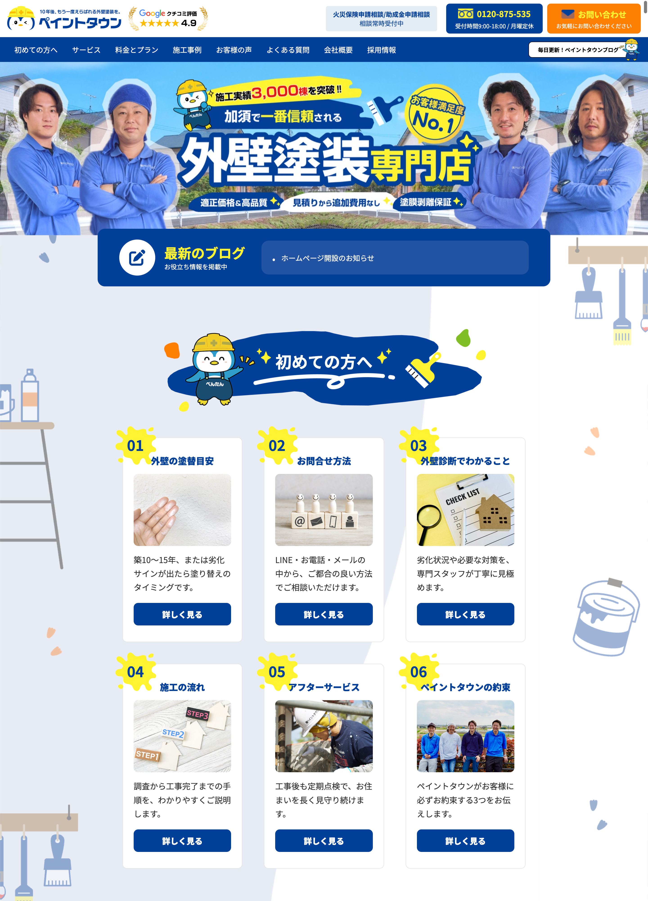

外壁塗装会社の
Webサイト
Webサイト

Overview
埼玉県加須市にある外壁塗装会社のWebサイトリニューアルにおいて、構成設計から文章作成、デザイン、コーディング、環境構築まで一貫して担当しました。 全ページのデザイン・実装を行い、約3ヶ月かけて制作しました。
Tool
Figma/HTML/CSS/Illustrator/Wordpress
Point
「賑やかで元気な印象」「青を基調としたデザイン」というご要望を踏まえ、情報量と見やすさのバランスを意識してサイトを設計しました。
高額商材である外壁塗装では安心感や信頼性が重要だと考え、施工事例の拡充やサービス内容の整理を実施。
さらに、ユーザーが必要な情報をスムーズに確認し、安心して問い合わせできるよう、情報設計や導線設計を行いました。
Goal
コーポレートサイトのリニューアルを実施し、訪問営業以外の集客チャネル構築に貢献。 公開後は Web 経由での流入を獲得しており、現在も継続的な改善を実施しています。 今後は LP 施策の再開も含め、 さらなる問い合わせ獲得に向けた支援を予定しています。